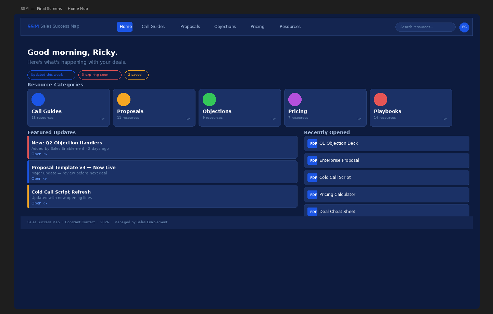

Constant Contact · Self-directed · 2026
The SSM — 2026 Redesign
Returning to a platform I built six years earlier — with a design system, component tokens, and a completely different set of tools — to rebuild it from the ground up.

The tool was abandoned. The problem wasn't.
The original SSM was built under constraint — Google Sites, no design system, no tokens, a platform chosen for accessibility over design fidelity. It worked. But years later, with the platform unmaintained and the design landscape completely changed, I wanted to answer a different question: what would this look like if I built it right?
Not a client brief. Not a work assignment. A self-directed reckoning with past work, applied skills, and a 2026 mindset.

This redesign is being documented as it's built — the Figma rebuild, the component system, the before & after comparison. This page will grow as the work does.
Design system first, screens second

What changed and why
The original relied on spatial padding to signal hierarchy — a Google Sites default that got accepted as a layout decision. This version collapses that distance intentionally: the hero is typographic rather than image-heavy, category cards have real affordance rather than being passive folder icons, and editorial content is woven into the same page rather than sitting below an awkward empty zone.

Folder navigation was replaced with flat filtered lists — a deal-stage filter bar lets reps narrow by Cold, Warm, Demo, Close, and Follow-up without drilling into nested folders. The two-click depth rule from the original content governance policy is preserved, but now enforced at the component level rather than by convention.
File rows replace plain text links throughout. Each row reads the filename, surfaces the file type as a color-coded icon, and exposes Open and Favorite actions on hover. The component is reusable across every category page.
From placeholder to working prototype
Both screens are live — built in HTML/CSS with the full Urbanist design system, token-based color, and interactive states. The Home Hub covers the top-level navigation experience. The Call Guides page shows a second-level category with deal-stage filtering, pinned resources, and file rows in action.
Scroll, hover, and interact — these aren't screenshots.
Where this could go
Rebuilding this tool surfaced a question the original never asked: what if the system could understand its own content? File rows auto-populating from filenames is a start. But the same logic extends further — document metadata (author, modified date, word count), full-text indexing for search that surfaces content buried inside PDFs, and AI-assisted tagging that categorizes new uploads by deal stage automatically.
None of that is in scope for this demonstration. But arriving at it organically — through the rebuild, not through a product brief — is the point. The best product questions come from actually using the thing you built.